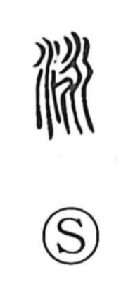

泳

Uncategorized
Kun: oyogu | On: ei
to swim ・ swimming
Explanation
A phono-semantic character with 永 as its phonetic core. 永 evokes a place where waters meet and rush together—a long, swift current—and it supplies the on reading ei. Building on that image, 泳 depicts moving across water as if carried along by the flow, and so comes to mean “to swim.”